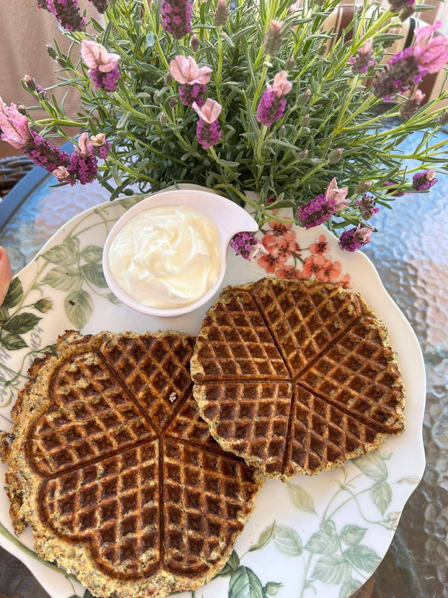
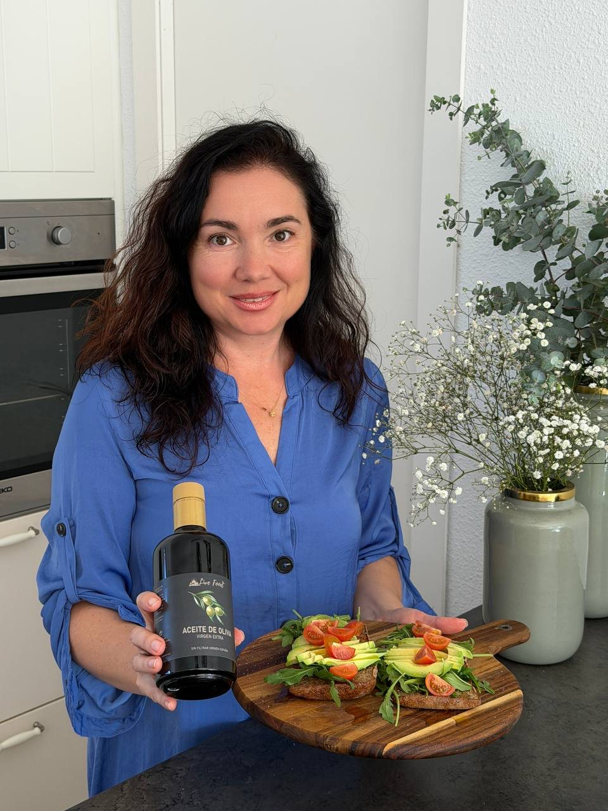
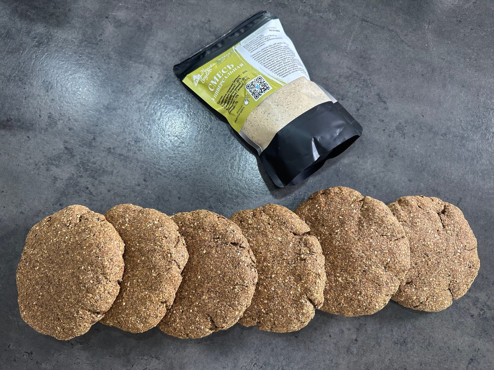
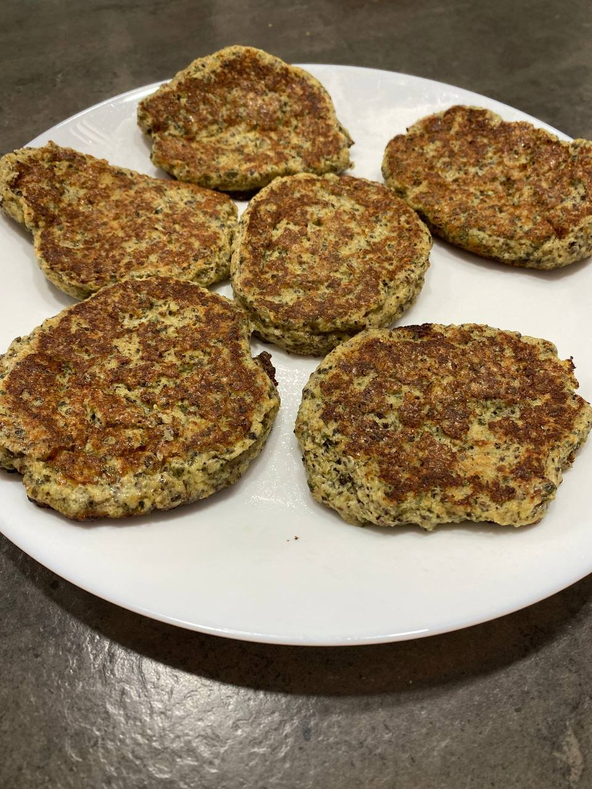
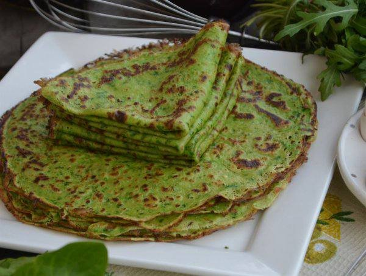

Вафли из смеси «Универсальная» без глютена
Лёгкие, румяные и очень нежные безглютеновые вафли на йогурте/кефире. Готовятся за 15 минут — идеальны на завтрак или перекус.

Ингредиенты
- 1 яйцо (55–60 г)
- 100 г густого греческого йогурта или кефира жирностью ≥ 2,5%
- 40–50 г смеси «Универсальная»
- Щепотка соли
- Сахар или мёд — по вкусу
- По желанию (сладкий вариант): 1 средний банан, корица, ваниль
- По желанию (несладкий вариант): 1 размятый отварной картофель, травы и специи
- Для смазки: масло ГХИ, кокосовое или оливковое
Приготовление
- В миске смешайте яйцо, йогурт/кефир, соль и сахар/мёд.
- Добавьте смесь «Универсальная» и перемешайте до однородности (средняя густота).
- По желанию вмешайте банан и специи или картофель с травами для несладкого варианта.
- Дайте тесту постоять 5–10 минут, чтобы смесь набухла.
- Разогрейте вафельницу и хорошо смажьте маслом ГХИ/кокосовым/оливковым.
- Выпекайте вафли до золотистой корочки.
- Альтернатива без вафельницы: вылейте тонкий слой на хорошо разогретую смазанную сковороду, подрумяньте с двух сторон и сверните ролл с начинкой.
Важно: Смазывайте поверхности щедро — так вафли получаются рельефными и легко вынимаются.
Приятного и полезного завтрака!
Что входит в смесь «Универсальная»
После холодного отжима масел, семена превращаются в питательную муку, которая богата клетчаткой, растительным белком и минералами.
Смесь состоит из обезжиренных семян
- тыквы (источник цинка и белка),
- кунжута (укрепляет кости и кожу),
- льна (богат омега-3 для сердца и сосудов),
- конопли (даёт энергию и поддерживает иммунитет),
- семян чиа (лёгкость и баланс),
- псиллиума (забота о пищеварении).

Попробуйте с маслами Live Food
Масла холодного отжима, смеси и ферментированные соли из этого рецепта есть в нашем каталоге.
В каталогПродукты из рецепта
- Смесь «Универсальная»
- Кокосовое масло
- Масло ГХИ
Смотрите также

Домашний хлеб без глютена из смеси «Универсальная»
В этом рецепте мы приготовим вкусный и питательный хлеб из смеси «Универсальная» от Live Food. Это идеальный вариант для тех, кто хочет исключить глютен и дрожжи из рациона, но при этом наслаждаться ароматной и сытной выпечкой.

Оладьи из смеси «Универсальная»
Пышные и ароматные оладьи без глютена — готовятся просто, получаются нежными и вкусными. Идеальны для завтрака или полдника.

Блины из жмыховой смеси «Универсальная» без глютена
Тонкие, эластичные и очень нежные блины на молоке — с вариантами свекольных и шпинатных. Простой состав, много клетчатки и отличный вкус.